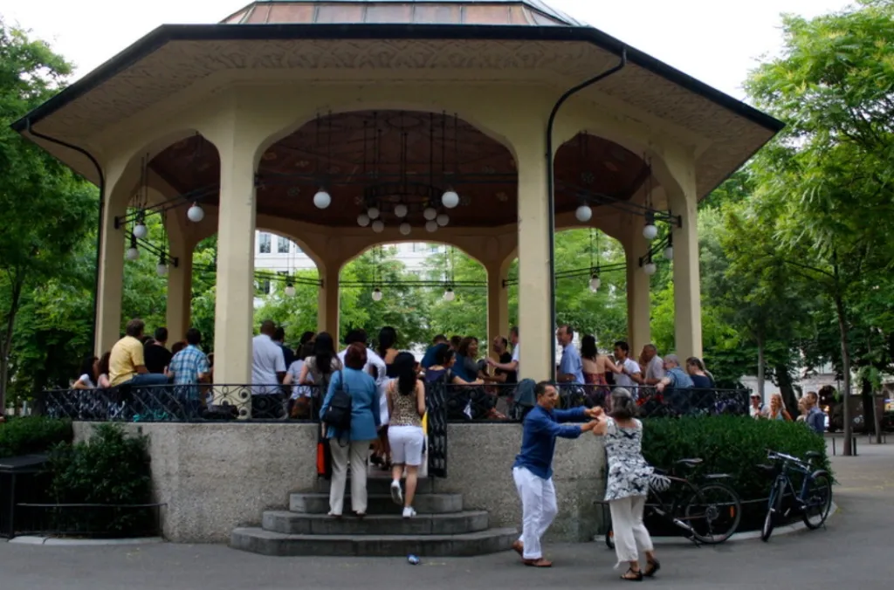
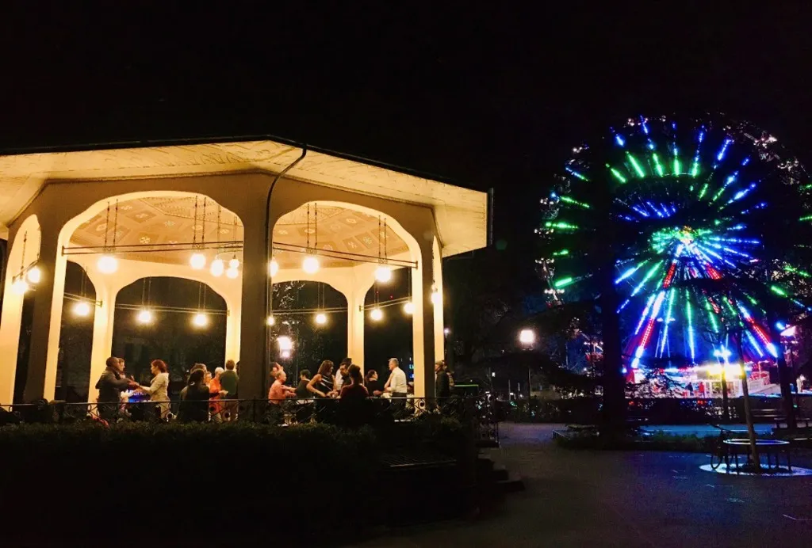

Zürich beheimatet eine der lebendigsten Bachata-Communities in Europa. Egal, ob es ein Verlangen am Montagabend oder das Wochenendfieber ist – es findet sich immer ein Ort für Verbindung und Tanz.
Für viele besteht die grösste Schwierigkeit beim Einstieg in Bachata darin, zu wissen, wo die Party steigt. Bei AXcent Dance glauben wir, dass Social Dancing die Seele unserer Gemeinschaft ist. Hier setzt du dein wöchentliches Training in die Praxis um und findest wirklich deinen Flow. Hier ist dein nächtlicher Guide zu den besten Social-Tanzflächen in Zürich.
Montag: Tanzen am See
Jeden Montag erlebst du die Magie des Tanzens direkt am See beim Bürkliplatz Open Dancing. Es ist komplett kostenlos und unglaublich anfängerfreundlich. Die Open-Air-Atmosphäre macht es zum perfekten Ort, um die erste Nervosität beim Social Dance zu überwinden.
Das Tanzen unter freiem Himmel am **Bürkliplatz** ist eine Zürcher Tradition. Es gibt nichts Vergleichbares zu einem Sonnenuntergang über dem Zürichsee, begleitet von den Rhythmen der Dominikanischen Republik. Es ist ein soziales Ökosystem, in dem jeder willkommen ist.


Mid-Week Energie: Dienstag & Donnerstag
Dienstagabende gehören dem **Mi Bachata im Vior Club**, direkt im Herzen der Stadt. Es ist oft der bestbesuchte Abend unter der Woche, voller Energie und hochkarätiger Tänzer. Während Donnerstage etwas ruhiger sind, solltest du unsere Community-Gruppen für spontane Studio-Socials oder kleinere Treffen im Auge behalten.
Das Wochenende: Hochkarätige Clubs
Friday Night @ Bananenreiferei
Ein Erlebnis auf mehreren Floors, wobei der Bachata-Floor meist erst spät in der Nacht öffnet. Es ist ein Ritual für viele Tänzer, die sowohl Salsa als auch Bachata unter einem Dach geniessen möchten.
Club Silbando Specials
Markiere dir den **4. Freitag** (Fiesta Bachata) und den **2. Samstag** (Fiesta Pasion) jedes Monats im Kalender. Diese Events bieten Workshops lokaler Tanzlehrer gefolgt von intensivem Social Dancing auf eigenen Floors.
Wenn du vor deinem ersten Social nervös bist – keine Sorge. Lies unseren Anfänger Guide, um mehr über Tanzetikette und die Erwartungen zu erfahren. Wir besuchen diese Partys oft als Gruppe, sodass du immer ein bekanntes Gesicht aus der AXcent-Familie sehen wirst.
Bereit für die Social-Tanzfläche?
Möchtest du tanzen lernen? Komm in unsere Tanzschule mit einer Probelektion. Den Stundenplan findest du hier.
TEIL DER AXCENT COMMUNITY WERDEN